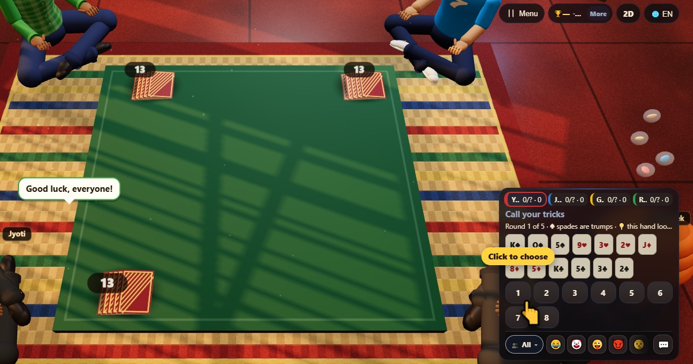

Колл-брейк (Call Break)
- 👥 4 игроков
- Карточные игры
- 🆓
Гайд на русском
Заяви, сколько взяток возьмёшь, и возьми их. Пики — всегда козырь.
English name: Call Break

Как играть
- Сдаются все 52 карты, по 13 каждому.
- Каждый заявляет число взяток от 1 до 8, начиная с игрока после сдающего.
- Первый игрок ходит любой картой. По кругу каждый обязан класть ту же масть и, если может, перебивать лучшую карту.
- Если нужной масти нет, нужно положить пику и, если можешь, перебить старшую пику. Нет пик — клади что угодно.
- Взятку берёт старшая пика; без пик — старшая карта масти хода. Взявший ходит следующим.
Очки
Выполнил заявку — получаешь заявленное число плюс 0,1 за каждую лишнюю взятку. Не выполнил — теряешь заявленное число.
Кто побеждает
После пяти раундов побеждает наибольшая сумма.
Частые вопросы
Сколько игроков нужно для Call Break?
Ровно четыре. Свободные места занимает компьютер.
Call Break — азартная игра?
Не в ChitPlay. Здесь нет денег, ставок и призов: очки нужны только для счёта.
Как играть
- Как гость: Без регистрации и входа. Выбери имя и играй сразу.
- С компьютером: Если никого нет, свободные места займут компьютерные игроки. Легко, нормально или сложно.
- Онлайн: Садись за открытый стол с игроками со всего мира.
- С друзьями рядом: Открой игру на одном телефоне и поделись кодом или QR-кодом. Друзья подключаются со своих телефонов.
- На одном телефоне: Передавайте телефон по кругу: одного устройства хватит всей семье.
Другие языки
- हिन्दी: कॉल ब्रेक
- Hinglish: Call Break
- Español: Call Break
- Português: Call Break
- Français: Call Break
- Deutsch: Call Break
- Bahasa Indonesia: Call Break
- Türkçe: Call Break
- Italiano: Call Break
- 日本語: コールブレイク
- 한국어: 콜 브레이크
- 中文: 叫牌（Call Break）
- اردو: کال بریک
- नेपाली: कल ब्रेक
- বাংলা: কল ব্রিজ (কল ব্রেক)
- English: Call Break · Полные правила (англ.)
Идеи игр
Все игры
 Цветная битва
Цветная битва Сумасшедшие восьмёрки
Сумасшедшие восьмёрки Летающая записка
Летающая записка Гонка в тоннеле
Гонка в тоннеле Турбо-тоннель
Турбо-тоннель Тест на реакцию
Тест на реакцию Тест Струпа
Тест Струпа Память на числа
Память на числа
В ChitPlay нет настоящих денег, ставок и призов. Очки ничего не стоят.